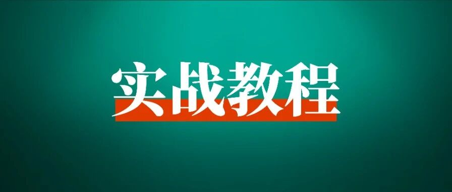

新手如何高效生成AI视频，避开内卷快速赚到美金？
👆点击 生财有术 > 点击右上角“···” > 设为星标🌟
国内太卷，想做海外项目，不知道从何入手？项目太复杂，日常没时间做？
不妨先从Youtube Shorts发布视频开始，更加快速、低成本变现。
今天圈友 @星吟 将手把手教你如何找对标，并用AI高效制作爆款Shorts视频，希望对你有帮助。

大家好，我是星吟，之前看了亦仁发布的Youtube超级标，感觉大有可为，于是立马开干！
这篇内容主要是围绕对标账号，如何高效1比1制作出爆款视频，并让chatgpt帮忙制定了3个月的行动方案和计划，对想做Youtube赚美金的朋友或许有帮助。
什么是Youtube超级标？
亦仁分析了目前Youtube的发展前景，指出了一条潜在的可获得巨大收益的细分方向：用AI生成的各种视频，上传到Youtube和Shorts，获取广告分成。
同样的播放，在国内视频平台可能一文不值，但在YouTube上可能有几千美金的收益。
近期为了和tiktok竞争，Youtube推出了Shorts，Shorts又开通了广告分成计划，且已经看到一些中国人在Shorts上赚钱和导流的案例，具体可以查看亦仁星球分享。

接下来是我的实操内容。
Part 1
账号分析
我这次参考的账号是 Deep Sea Discoveries
参考理由
① 爆款比例高。总共74个视频，有9个千万播放量的视频，占比12%，有25个百万播放量的视频，占比34%。
② 涨粉迅猛。频道于2024年2月1日注册，9月23日开始发布视频，2个月内订阅者人数接近40W。
③频道收益高。根据socialblade估计，该频道预计月收入$37.4K - $599.1K。
从历史播放量来看，估计该频道10月已符合YouTube合作伙伴计划要求，从第8个视频开始即可享受广告收益，这个频道的变现速度太快啦。
④低成本、生产效率高。无需露脸，视频图像和背景音乐全部可以用AI生成，独享收益。
但是值得注意：爆款视频评论区已有多名观众指出视频为AI生成，并且部分视频主图有点夸张，可能后续会有负面影响，不确定是否会被限流或者取消收益。
内容研究
我用RPA爬取了11月1日之前该频道所有视频的标题、观看次数、点赞数和发布日期，并和ChatGPT一起分析内容。
初步观察到该频道的爆款视频主题集中在巨型海洋生物/动物救援。
巨型海洋生物视频的主图均是罕见、巨大的海洋生物，激起了观众的好奇心和猎奇欲，常用的话题标签有：#GiantSeaCreatures #FishingDiscoveries
#OceanMysteries
动物救援视频的主图是人类帮助极地动物（北极熊、企鹅）的场景，评论区主要是是有关于称赞人类的善行和对极地动物的珍惜，一般常用的话题有：#WildlifeConservation #ArcticAnimals
因此，如果我要做类似的账号，第一批选题可能是：
巨型海洋生物捕获：展示巨型鱼类、章鱼或其他海洋怪兽被捕捞的场景。
深海救援故事：涉及拯救或帮助深海生物的视频，如救援搁浅的海洋动物。
罕见生物特写：探索深海中不常见的物种，如透明生物、巨型螃蟹、罕见的珊瑚等。
惊奇打捞物：拍摄打捞过程中发现的意外之物，比如遗失的古董、船只残骸等。
部分汇总如下：

Part 2
视频复刻过程
我选择复刻播放量最高的视频，视频是巨型章鱼被捕捞到渔船上处理的场景。总共12秒，由3段场景拼接而成。
复刻过程中使用的工具有Youtube视频下载工具、AI视频生成工具（海螺AI、即梦）、剪辑工具（剪映）、视频水印去除工具（万兴优转），接下来是视频复刻过程。
01
下载源视频
下载Youtube视频，并且将视频中出现的3段场景截图保存，并且按照场景的出现顺序标记图片。

02
生成AI视频
将图片逐个导入海螺AI，生成3个场景的视频。目前国内用户可以免费使用海螺AI。
但是用提示词生成视频需要排队，排队的人越来越多，至少也要等好几个小时，所以我直接用图片生成视频，就无需排队，3分钟左右即可。


03
合成视频
将3段视频上传到剪映合成，下面这个就是我生成的视频。
04
去除视频水印
由于海螺AI生成的视频是带有水印的，所以还要用工具去水印。我目前用的是万兴优转，选择去水印区域移除即可，去除效果一般。
后面两个场景还是有水印，而且免费额度有限制，后续还要寻找更好用的去水印工具，也欢迎大家在评论区推荐。
Part 3
视频创新
借鉴完怎么创新呢？
这个好办，把图片中的主体换成其他巨型海洋生物即可！于是，我去问了kimi：世界上有哪些少见的巨型海洋生物？kimi给我提供了10个答案。

我选择皇带鱼作为替换主体，输入指令：将图片中的章鱼换成皇带鱼，其余背景人物不变。
用的AI生图工具是即梦，它的好处在于可以生成4张图片供参考，还可以选择喜欢的生成图做进一步的微调。
左侧还有调整精细度的选项，但是使用下来，个人感觉：精细度越高，生成的图片AI感反而更重。

而即梦也有视频生成的功能。

于是我用同样的图片+提示词，借机对比了即梦和海螺的视频生成效果。没想到，即梦生成的视频中规中矩，反倒是暴露了海螺的缺点：不稳定。
在海螺用同样的图片+提示词生成视频，竟然在第2秒换了水中的场景。我想应该是因为我加了提示词，之前的图生视频都是只有图片。
于是我就按照之前的方式只传了图片，结果又提示：视频内容不符合社区规范，生成失败。
可能这正应了清华人工智能学院沈阳教授的话。
你能驾驭AI，AI生成的内容体现的是你的想象力和确定性。你不能驾驭AI，AI生成的内容体现的是它的想象力和不确定性。
Part 4
同类频道
我通过对标频道的视频标签和主题，来寻找类似的频道，并且用RPA爬取了基本的频道信息，再去socialblade查看预测频道的月收入，整理出了10个类似频道的信息。
如果圈友还想研究得更细，可以用RPA逐个爬取频道的视频信息来分析。目前已经出现多个模仿Deep Sea Discoveries的频道，并且短期涨粉也很快。

Part 5
行动方案
如何从0-1跑通AI视频赛道，这是我推荐的一个行动方案，供大家参考。
第1个月：赛道研究&内容规划
1. 市场与受众分析
确定目标受众群体：年龄层、兴趣点、观看习惯。
研究竞争对手和成功案例，找出热门内容类型和关键因素。
2. 选题与内容方向确定
制定10-15个潜在视频主题，确保符合目标观众兴趣并有潜力爆火。
列出相关话题关键词，确保视频能优化SEO，增加搜索曝光。
3. 工具与资源准备
调查并选择视频剪辑、AI内容工具（如海螺、可灵等）。
准备所需的素材库（如视频、图片、音效），确保版权合规。
4. 初步视频脚本撰写
为前3-5个视频撰写初步脚本，涵盖视频开头、主内容和结尾。
确保内容结构清晰，具有吸引力和信息量。
第2个月：内容制作与发布
1. 视频制作
使用AI工具和剪辑工具制作首批视频，确保质量和风格一致。
在制作过程中记录每一步骤，积累经验，形成SOP，以便后续优化。
2. 发布与推广策略
争取每日发布1个视频，保持更新频率。可以在周末集中制作，然后设置定时上传。
利用YouTube的SEO最佳实践优化标题、描述和标签，提高视频的搜索排名。
3. 数据跟踪与反馈
通过YouTube Analytics跟踪观看量、点击率、观众互动等关键数据。
根据数据分析，识别受欢迎的内容类型和不足之处。
第3个月：优化与扩展
1. 内容优化
针对表现较好的视频，制作相关主题的系列内容，吸引持续关注。
结合观众反馈优化视频风格、长度、节奏等。
2. 增加互动
在视频中加入引导性问题，激励观众留言互动。
通过回复评论和观众互动，增加粉丝粘性。
3. 探索变现机会
达到YouTube合作伙伴计划的要求后，开启广告收入。
探索其他变现渠道，如赞助合作、产品推广等。
4. 总结与调整
评估3个月来的频道增长、内容受欢迎程度和流量来源。
制定下一阶段的改进策略，为接下来的内容制作和增长目标打下基础。
在这个过程中，也可以用表格来跟进自己的进度。
行动计划追踪表

Part 6
需要克服的困难点
1. YouTube Shorts的变现机制
问题：要获得广告分成，必须达到YouTube合作伙伴计划（YPP）的要求，必须满足在过去90天内获得1,000名订阅者，并且有效公开Shorts短视频观看次数达到1,000 万次。
解决方案：参考竞对的爆款视频选题，提高爆款视频产出率。
后期可以根据Shorts视频的反馈，推出长视频（例如爆款Shorts的延长版、每月视频合集），将Shorts与长视频相结合。
2. 观众流失率高
问题：由于Shorts视频的内容通常较短，观众容易一刷而过，导致观众粘性较低，难以建立忠实粉丝群。
解决方案：通过高质量、创意十足的内容吸引观众，保持风格一致，吸引观众持续关注。利用视频末尾的引导，例如提示观众订阅或观看长视频来增加粉丝的粘性。
3. 版权问题
问题：Shorts视频常常使用流行音乐或视频片段，容易触发版权警告或限制，从而影响视频的流量和变现。
解决方案：尽量使用YouTube提供的Shorts音乐库或获得授权的音乐，避免使用未经授权的素材；使用原创内容确保版权合规。
4. 视频制作效率要求高
问题：为了吸引观众持续关注，YouTube Shorts的发布频率一般较高，创作者需要定期更新内容，制作效率要求较高。
解决方案：建立内容制作SOP，提前规划并批量制作多个视频；使用高效的剪辑工具和模板，节省制作时间。
5. 短视频的SEO优化难度
问题：由于Shorts视频的长度有限，标题和描述的空间较少，难以像长视频那样优化SEO来吸引搜索流量。
解决方案：尽量使用热门关键词，并在标题和描述中明确视频内容；利用相关标签增加曝光率，并确保视频封面和标题足够吸引人。
6. 流量波动大
问题：YouTube Shorts推荐机制较为随机，导致视频流量波动较大，有时视频爆火，有时则几乎没有流量。
解决方案：发布多样化的内容，保持高频更新，以增加被推荐的机会；同时，通过社交媒体平台推广，增加流量来源的多样性。
7. 缺乏观众反馈
问题：由于Shorts视频时间短，观众往往不会留下评论，创作者较难通过反馈了解观众偏好。
解决方案：尝试在视频中提出问题或引导观众互动，以增加评论量；关注点赞和观看量的变化，判断观众的偏好。
经过这番分析，我感觉YouTube值得入场。
一些千粉的频道都能跑出百万级别的视频，有些视频质量一般的也有好几万播放量。
而且Youtube的盘子够大，用户数量有二十几亿，新手小白如果认真干，比别人多想一点、多做一点，也是能吃到一些红利的。接下来就是行动啦！开干！
作者 | 星吟 | 排版 | Ted
主编 | 七天 | 编辑 | 小瑞

如果看完本文后，想了解更多适合新人，易上手的项目，
不妨看看我们为你准备的这份《生财有术精选20个新手项目合集》，里面与AI和出海等内容，希望对你有所帮助。

解锁方式：
生财圈友，私信鱼丸关键词【新手】。
如果您暂时还没有加入生财，可以扫描下方二维码，添加鱼丸微信，回复【新手】，领取免费的体验卡，查看航海手册和生财有术近180天内容。
注：每人仅领一张，无法重复领取。